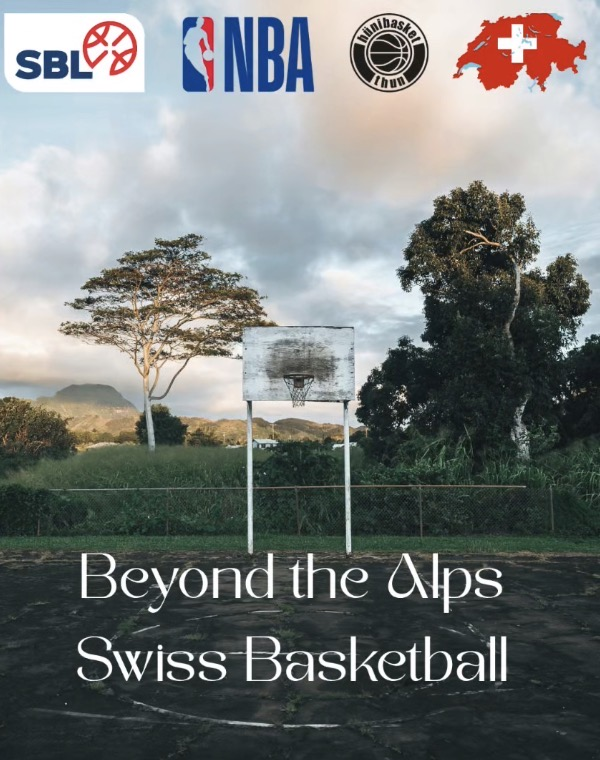

Motiviert, zuverlässig und sportbegeistert. Aktuell absolviere ich eine Ausbildung zum Mediamatiker.
Mehr über michÜBER MICH
Ich bin Dan Beiner. Ich bin 15 Jahre alt und komme aus der Schweiz.
In meiner Freizeit mache ich sehr gerne Sport. Sieben Jahre lang spielte ich erfolgreich Rollhockey beim HCMW in Münsingen.
Heute trainiere ich viermal pro Woche Basketball bei hüniBasket.
MEIN WEG
Schlossmatt Münsingen
Schlossmatt Münsingen
BICT AG
BBZ Biel
SKILLS
Ich kann gut auf Menschen zugehen und mich leicht integrieren. Das hilft mir beim Bearbeiten eines Auftrags, um herauszufinden, wie die Vorstellungen meines Gegenübers bezüglich eines Produktes sind.
Ich habe viermal pro Woche Basketballtraining bei hüniBasket. Ich mag es, an körperliche Grenzen zu gelangen und mich zu pushen.
Ich bin ein Teamplayer. Gruppenarbeiten und richtige Kommunikation gelingen mir gut.
ERFAHRUNGEN
SCHULE
Im Rahmen meiner Abschlussarbeit der 9. Klasse habe ich dieses Projekt erstellt und dabei neue Kenntnisse und Fähigkeiten gelernt. Es war mein erstes solches Projekt.

KONTAKT
Du möchtest mehr über mich erfahren?
E-Mail schreiben